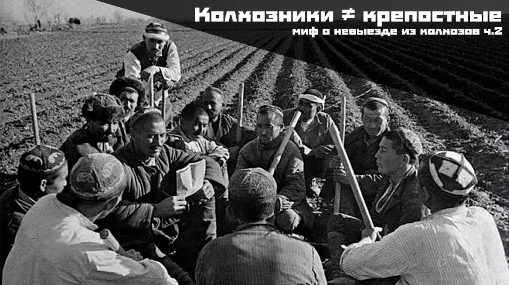
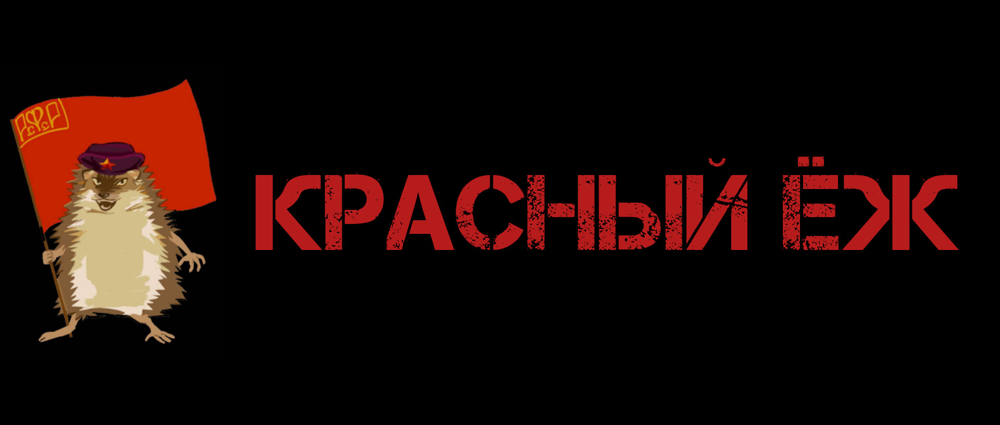
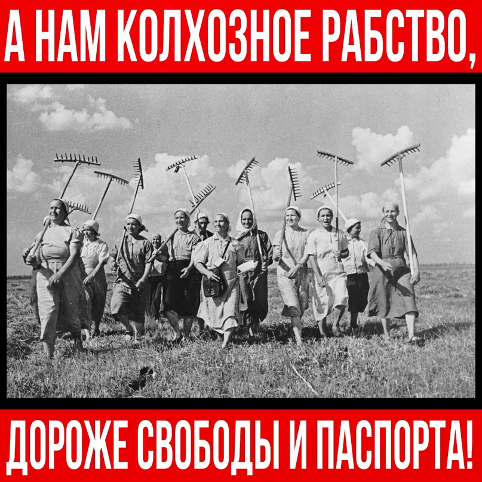

-

Почему колхозники — не крепостные (1 часть)
ПРОЧИТАТЬ
Почему колхозники — не крепостные (1)
- 
Почему колхозники — не крепостные (2 часть)
ПРОЧИТАТЬ
Почему колхозники — не крепостные (2)
 |
|
|
МИФЫ КОЛЛЕКТИВИЗАЦИИ
 |
СССР унаследовал от Российской Империи феодальное сельское хозяйство, которое было непригодно для решения срочных и жизненно важных задач накануне надвигавшейся войны. Коллективизация стала одним из инструментов, позволивших не только поднять село на качественно новый технологический и культурный уровень, но и обеспечить индустриализацию, начать военное строительство. Это в перспективе помогло одержать Победу над нацистами и заложить основы дальнейшей обороноспособности и экономического роста государства. Как и любые революционные преобразования, процесс коллективизации шёл с сложно. Были ошибки, жертвы и перегибы, но в конечном итоге история показала правильность принятых решений. Враги не смогли помешать, но распространили о колхозах массу лживых мифов. Разберём и опровергнем самые распространённые выдумки. |
Почему колхозники — не крепостные (1) |
Почему колхозники — не крепостные (2) |
Забирали ли скот? (1) |
Забирали ли скот? (2) |
С больной головы на здоровую: как наследственную болезнь российского царизма пытались выдать за миф о «крепостных крестьянах в СССР» |
|
Красный Ёж |
Статьи: | Мы в соцсетях
|